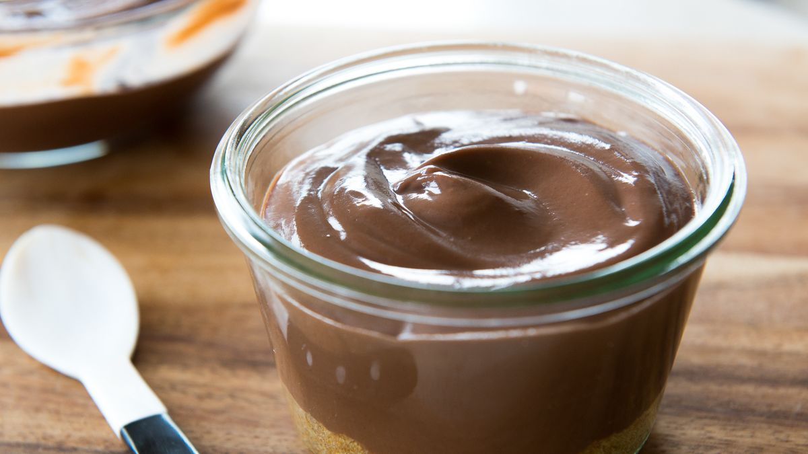

Chocolate pudding

Description
Easy chocolate pudding recipe whips up in no time in your microwave.
Ingredients
- ½ cup white sugar
- ⅓ cup unsweetened cocoa powder
- 3 tablespoons cornstarch
- 2 cups milk
- 2 teaspoons vanilla extract
Steps
- Whisk together sugar, cocoa, and cornstarch in a microwave-safe bowl. Whisk in milk, a little at a time, until no dry lumps remain.
- Cook in the microwave on high for 3 minutes. Stir well. Continue cooking and stirring at 1-minute intervals until shiny and thick, 2 to 4 minutes. Mix in vanilla.
- Press a piece of plastic wrap directly on surface of pudding to prevent skin from forming. Place in the refrigerator to chill. Serve cold.